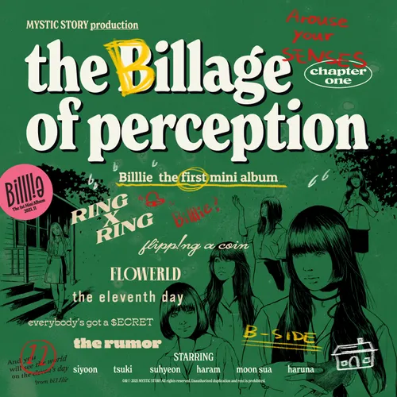
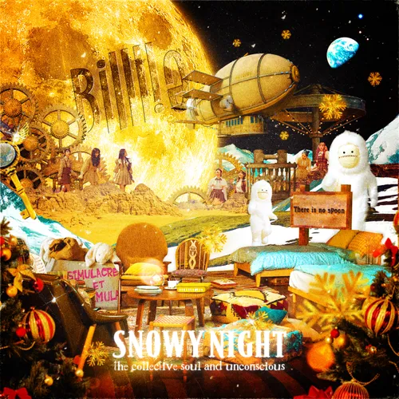
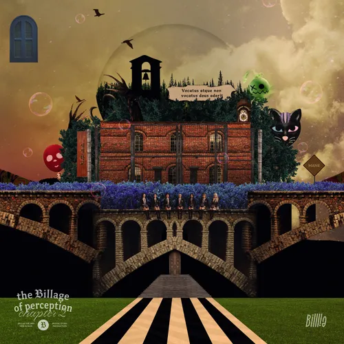
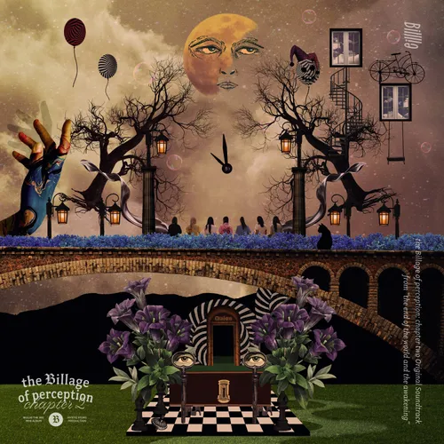
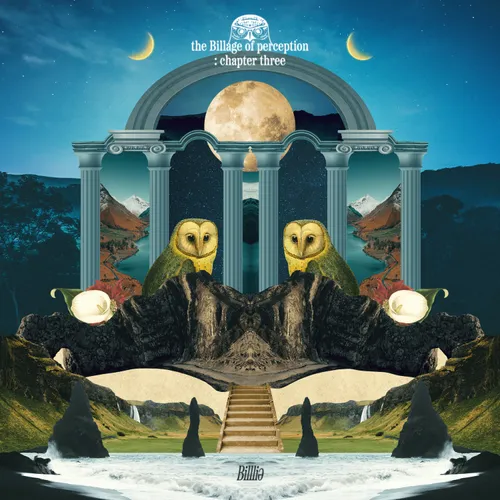
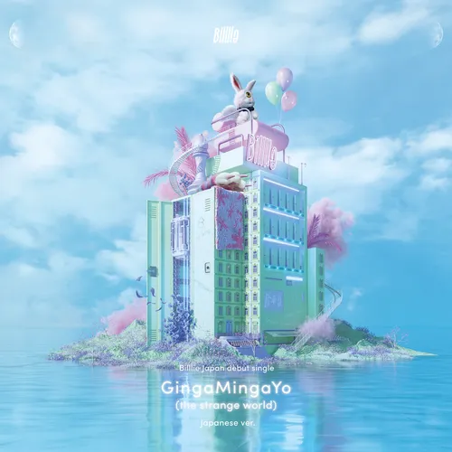

미니 1집 - the Billage of perception
: chapter one
타이틀 곡 - RING X RING

디지털 싱글 - the collective soul
and unconscious:
snowy night
타이틀 곡 - snowy night
미니 2집 - the collective soul
and unconscious:
chapter one
타이틀 곡 - GingaMingaYo (the strange world)
미니 2집 ost - the collective soul
and unconscious: chapter one
Original Soundtrack from
"what is your B?"
타이틀 곡 - a sign ~ overture to Billlie
track by YOON: 팥빙수
타이틀 곡 - 팥빙수

미니 3집 - the Billage of perception:
chapter two
타이틀 곡 - RING ma Bell
(what a wonderful world)

미니 3집 ost - the Billage of perception:
chapter two Original Soundtrack from
“the end of the world and the awakening”
타이틀 곡 - RING ma Bell ~
the howling memories

미니 4집 - the Billage of perception:
chapter three
타이틀 곡 - EUNOIA

일본 싱글 - GingaMingaYo (the strange world)
- Japanese ver. -
타이틀 곡 - GingaMingaYo (the strange world)
- Japanese ver. -